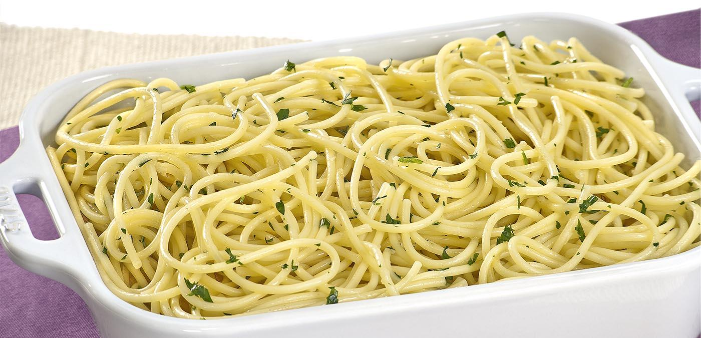
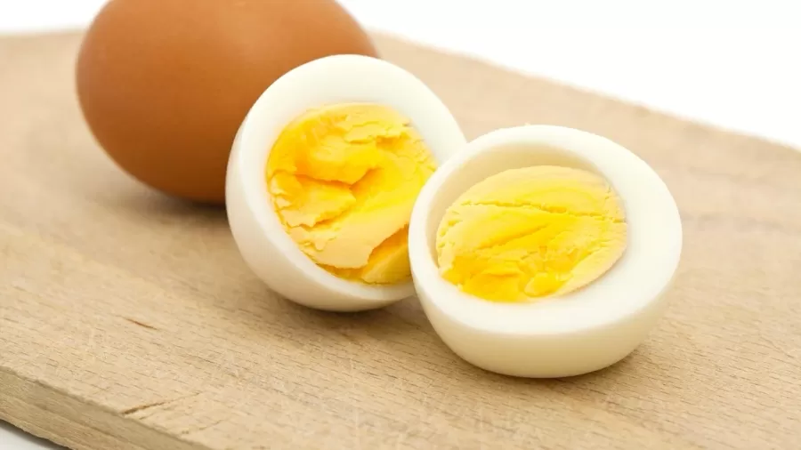
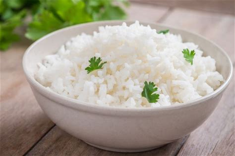

Macarrão ao alho e oléo
- 5 dentes de alho amassados
- 5 colheres de sopa de óleo
- 1 colher de sopa de manteiga
- Sal a gosto
Amasse bem o alho juntamente com o sal, formando uma pasta. Em uma frigideira, coloque o alho amassado e o óleo. Frite em fogo médio sem deixar o alho queimar, só dourar. Acrescente a manteiga e deixe ferver um pouco, só para incorporar bem o sabor, mexendo sempre. Coloque sobre o macarrão imediatamente.
Ovo cozido
- ovos
- agua até tampa os ovos
Coloque os ovos para cozinhar e assim que a água começar a ferver você desliga a panela imediatamente. Espere dois minutos e meio e escorra a água. Molhe o ovo na água fria por 30 segundos. Agora é só comer, depois de seguir todo passo a passo o seu ovo vai estar com a gema molinha.
Arroz Branco
- 1 xícara de arroz lavado
- 2 xícaras de água fervente
- 1 dente de alho amassado
- 1/4 de cebola picada
- azeite o suficiente
- sal a gosto
Refogue o alho e a cebola no azeite. Coloque o arroz e deixe fritar por cerca de 30 segundos. Adicione a água fervente e o sal. Abaixe o fogo e deixe cozinhar até a água quase secar. Tampe a panela e aguarde cerca de 20 minutos antes de servir.